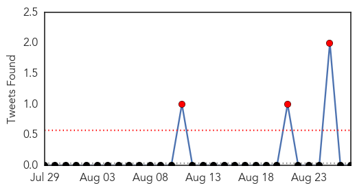
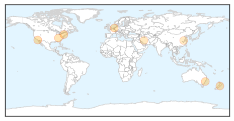
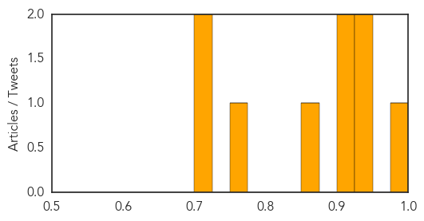

Influenza
30-Day Web Trend
0 alerts, 0 warnings

30-Day Twitter Trend
5 alerts, 0 warnings

Article Locations
Article Confidences
Top Articles:
- 0.984
- Getting a flu shot? There are new options
- 0.937
- Flu Vaccines Offer About 6 Months of Protection, Study Finds
- 0.929
- New Study by TSRI and Janssen Makes Major Advance Toward More Effective, Long-Lasting Flu Vaccine
- 0.912
- Does having a fever mean your infection is bacterial rather than viral?
- 0.907
- Influenza vaccine also prevents heart attacks, UNSW study finds
- 0.856
- Free Flu Shot Saturday set for Sept. 26
- 0.751
- August 26, 2015 Archives
- 0.719
- Protection from infection with influenza A H7N9 virus in a mouse model by equine neutralizing F(ab’)2.
- 0.705
- Lawmaker says flu shots should not be mandatory
Top Tweets:
-
No tweets found for Aug 27, 2015
Dengue Fever
30-Day Web Trend
0 alerts, 0 warnings

30-Day Twitter Trend
3 alerts, 0 warnings

Article Locations

Article Confidences

Top Articles:
Top Tweets:
- 0.714
- Flavivirus news: 9 more dengue cases reported - Times of India: 9 more dengue cases reportedTim... http://t.co/6k5iyA5f4B pathogenposse